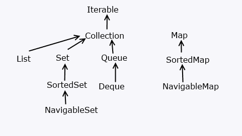

Для хранения наборов данных в Java предназначены массивы. Однако их не всегда удобно использовать, прежде всего потому, что они имеют фиксированную длину. Эту проблему в Java решают коллекции. Однако суть не только в гибких по размеру наборах объектов, но в и том, что классы коллекций реализуют различные алгоритмы и структуры данных, например, такие как стек, очередь, дерево и ряд других.
Классы коллекций располагаются в пакете java.util, поэтому перед применением коллекций следует подключить данный пакет.
Хотя в Java существует множество коллекций, но все они образуют стройную и логичную систему. Во-первых, в основе всех коллекций лежит применение того или иного интерфейса, который определяет базовый функционал. Среди этих интерфейсов можно выделить следующие:
- Collection: базовый интерфейс для всех коллекций и других интерфейсов коллекций
- Queue: наследует интерфейс Collection и представляет функционал для структур данных в виде очереди
- Deque: наследует интерфейс Queue и представляет функционал для двунаправленных очередей
- List: наследует интерфейс Collection и представляет функциональность простых списков
- Set: также расширяет интерфейс Collection и используется для хранения множеств уникальных объектов
- SortedSet: расширяет интерфейс Set для создания сортированных коллекций
- NavigableSet: расширяет интерфейс SortedSet для создания коллекций, в которых можно осуществлять поиск по соответствию
- Map: предназначен для созданий структур данных в виде словаря, где каждый элемент имеет определенный ключ и значение. В отличие от других интерфейсов коллекций не наследуется от интерфейса Collection
Эти интерфейсы частично реализуются абстрактными классами:
- AbstractCollection: базовый абстрактный класс для других коллекций, который применяет интерфейс Collection
- AbstractList: расширяет класс AbstractCollection и применяет интерфейс List, предназначен для создания коллекций в виде списков
- AbstractSet: расширяет класс AbstractCollection и применяет интерфейс Set для создания коллекций в виде множеств
- AbstractQueue: расширяет класс AbstractCollection и применяет интерфейс Queue, предназначен для создания коллекций в виде очередей и стеков
- AbstractSequentialList: также расширяет класс AbstractList и реализует интерфейс List. Используется для создания связанных списков
- AbstractMap: применяет интерфейс Map, предназначен для создания наборов по типу словаря с объектами в виде пары "ключ-значение"
С помощью применения вышеописанных интерфейсов и абстрактных классов в Java реализуется широкая палитра классов коллекций - списки, множества, очереди, отображения и другие, среди которых можно выделить следующие:
- ArrayList: простой список объектов
- LinkedList: представляет связанный список
- ArrayDeque: класс двунаправленной очереди, в которой мы можем произвести вставку и удаление как в начале коллекции, так и в ее конце
- HashSet: набор объектов или хеш-множество, где каждый элемент имеет ключ - уникальный хеш-код
- TreeSet: набор отсортированных объектов в виде дерева
- LinkedHashSet: связанное хеш-множество
- PriorityQueue: очередь приоритетов
- HashMap: структура данных в виде словаря, в котором каждый объект имеет уникальный ключ и некоторое значение
- TreeMap: структура данных в виде дерева, где каждый элемент имеет уникальный ключ и некоторое значение
Схематично всю систему коллекций вкратце можно представить следующим образом:
Интерфейс Collection
Интерфейс Collection является базовым для всех коллекций, определяя основной функционал:
|
1
2
3
4 |
public interface Collection<E> extends Iterable<E>{
// определения методов
} |
Интерфейс Collection является обобщенным и расширяет интерфейс Iterable, поэтому все объекты коллекций можно перебирать в цикле по типу for-each.
Среди методов интерфейса Collection можно выделить следующие:
- boolean add (E item): добавляет в коллекцию объект item. При удачном добавлении возвращает true, при неудачном - false
- boolean addAll (Collection<? extends E> col): добавляет в коллекцию все элементы из коллекции col. При удачном добавлении возвращает true, при неудачном - false
- void clear (): удаляет все элементы из коллекции
- boolean contains (Object item): возвращает true, если объект item содержится в коллекции, иначе возвращает false
- boolean isEmpty (): возвращает true, если коллекция пуста, иначе возвращает false
- Iterator<E> iterator (): возвращает объект Iterator для обхода элементов коллекции
- boolean remove (Object item): возвращает true, если объект item удачно удален из коллекции, иначе возвращается false
- boolean removeAll (Collection<?> col): удаляет все объекты коллекции col из текущей коллекции. Если текущая коллекция изменилась, возвращает true, иначе возвращается false
- boolean retainAll (Collection<?> col): удаляет все объекты из текущей коллекции, кроме тех, которые содержатся в коллекции col. Если текущая коллекция после удаления изменилась, возвращает true, иначе возвращается false
- int size (): возвращает число элементов в коллекции
- Object[] toArray (): возвращает массив, содержащий все элементы коллекции
Все эти и остальные методы, которые имеются в интерфейсе Collection, реализуются всеми коллекциями, поэтому в целом общие принципы работы с коллекциями будут одни и те же. Единообразный интерфейс упрощает понимание и работу с различными типами коллекций. Так, добавление элемента будет производиться с помощью метода add, который принимает добавляемый элемент в качестве параметра. Для удаления вызывается метод remove(). Метод clear будет очищать коллекцию, а метод size возвращать количество элементов в коллекции.